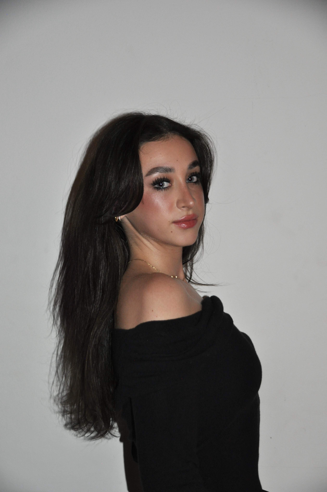

Hi, I’m Ava.
I’m a UCSB student majoring in Sociology and minoring in Media Art & Design, also pursuing the Technology Management Certificate. I make things that live between code, design, and social theory.
Explore my portfolio
There are two easy ways to access my work:
- Use the button → it opens my portfolio in a new tab.
- Or type avatartakovsky.github.io/portfolio into your browser.
Tip: If you’re on my GitHub profile page
Click Portfolio in the top navigation or use the button above.